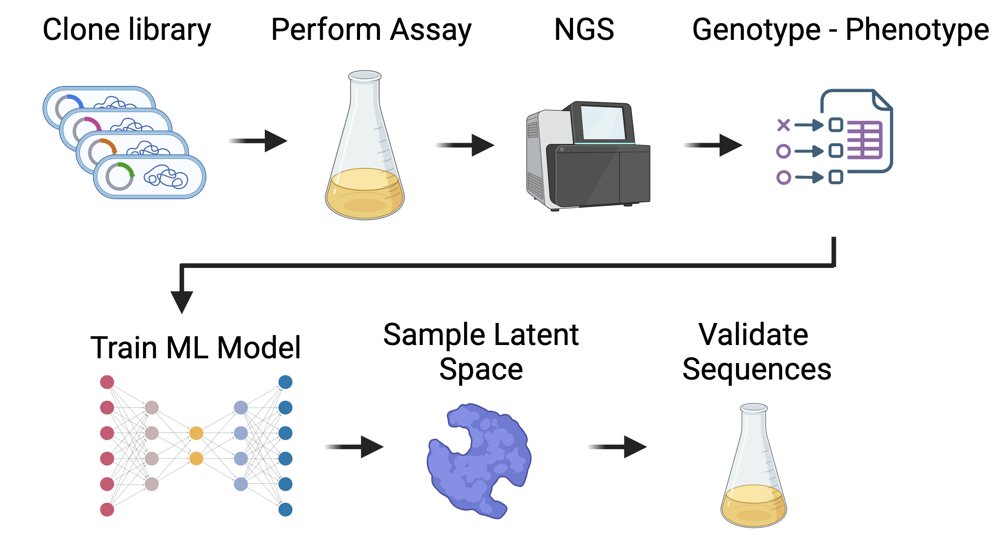
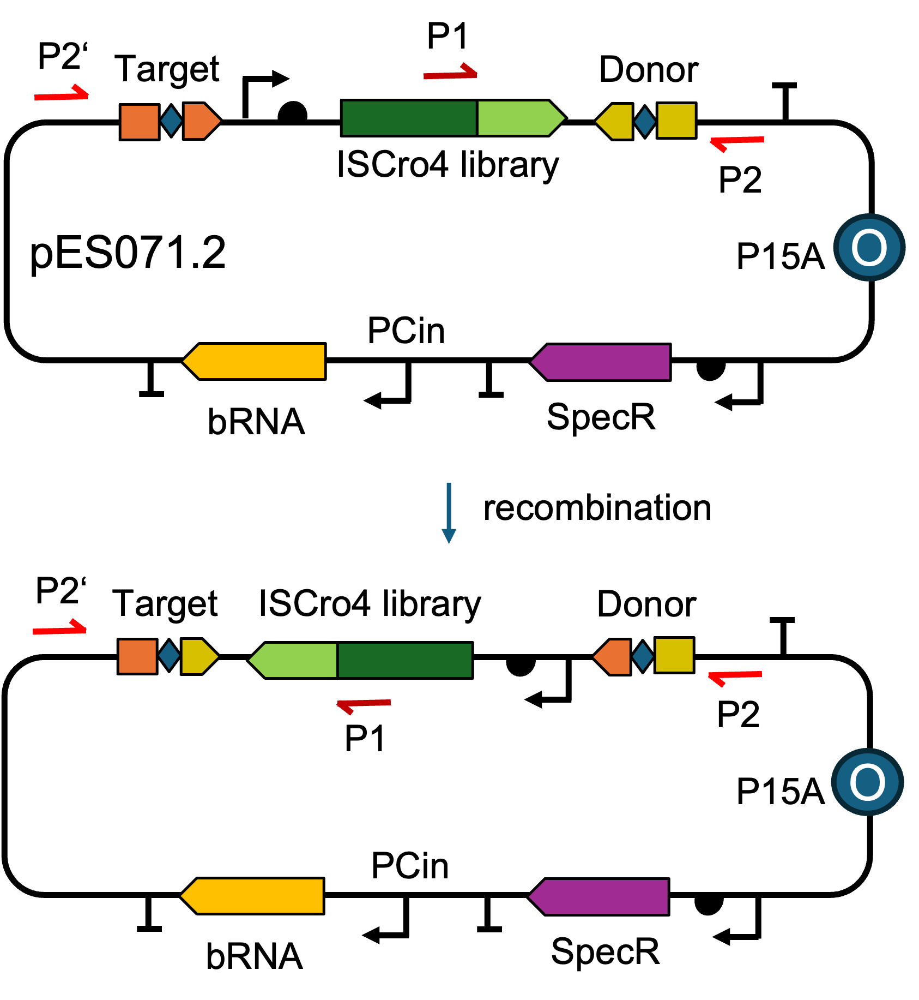
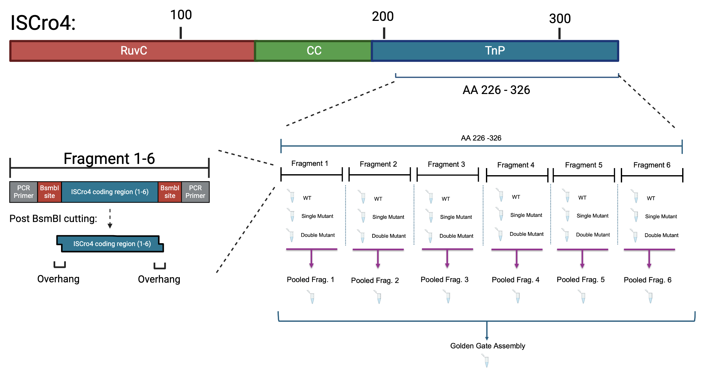
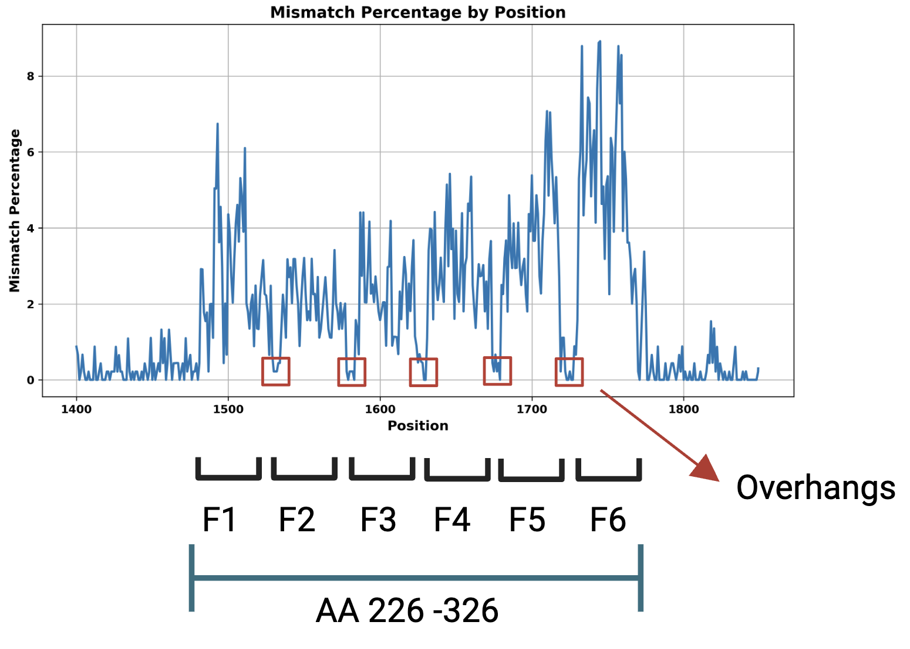
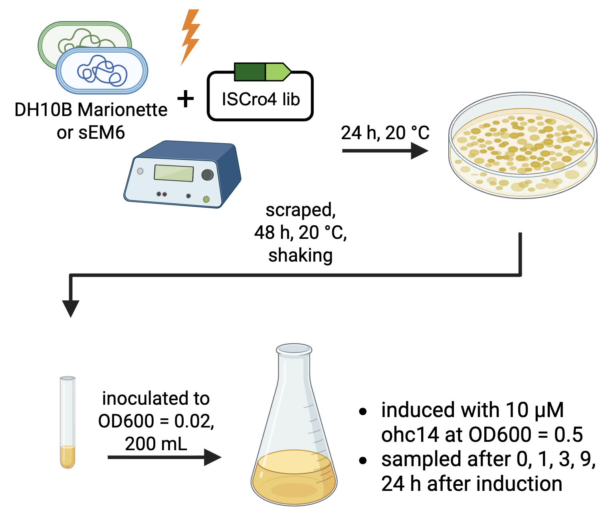
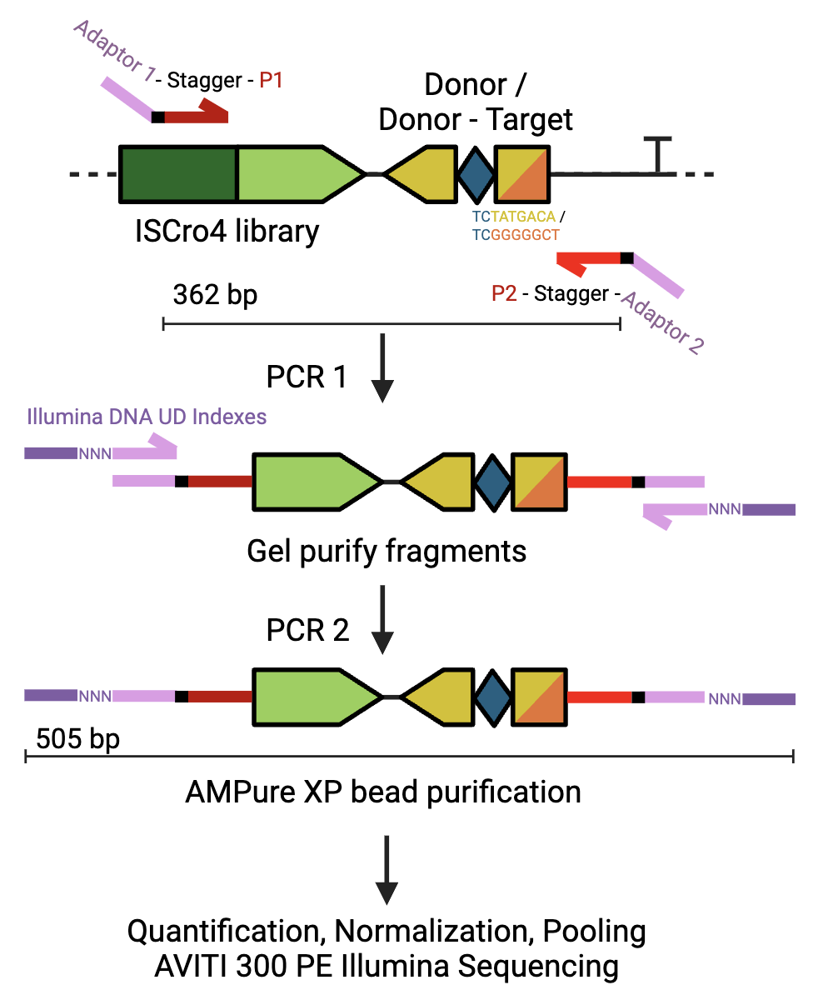
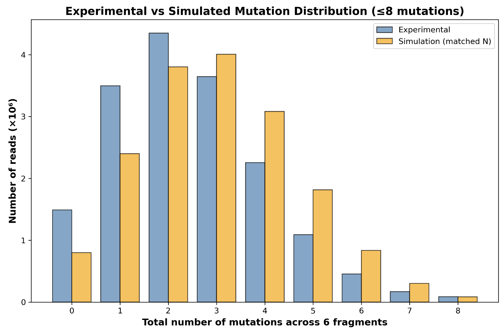

Deep Mutational Learning of the bridge recombinases fitness landscape
Motivation
Homologous bridge recombinases such as IS621 and ISCro4 share 88 % identity in their amino acid sequence. This difference in sequence identity suggests that engineered variants could also exhibit strong recombination activity, potentially even outperforming the known enzymes. Traditional directed evolution methods often find local improvements but can miss other promising regions in the fitness landscape. 1
Our Approach
To explore the functional landscape, we developed a Deep Mutational Learning (DML) framework that combines experimental screening with machine learning–based analysis (Figure 1). A deep mutational scan of a previous study has shown that the TnP domain of the ISCro4 recombinase can tolerate a variety of mutations while maintaining activity 2. Therefore, we designed a complex and unbiased mutational library that explores combinations of amino acid substitutions across the TnP domain. We aim to map recombinase gene variants to their recombination activity. The library is tested in a functional inversion assay that directly links its sequence (genotype) to its recombination performance (phenotype) on the plasmid DNA. This encoding allows us to generate a large, labelled Illumina Deep Sequencing dataset suitable for training machine learning models. With these models we aim to learn the underlying structure of the recombinase fitness landscape and capture complex interactions between multiple mutations. Sampled best performing functional variants from the model's latent space will serve as a starting point for the described continous DE methods.

Connect efficiency of bridge recombinases to the genetic variants
Genetic variants of the ISCro4 are tested based on their inversion performance on the plasmid pES071.2 (Figure 2). The genetic elements on the plasmid include - the ISCro4 gene with a constant part and a library fragment, - donor and target sequences used as recognition sites of ISCro4, - the ISCro4 bridge RNA with complementary sites to the donor and target sequence.
The donor sequence is located in close proximity to the ISCro4 library variants. The presence or absence of an inversion event, given by the sequence after the donor CT core, can be directly linked to the sequence of the corresponding variant. This design enables direct assessment of both genotype and phenotype with deep short-read sequencing.

Unbiased Library Design and Construction of the ISCro4 TnP domain
To construct the library, the mutagenized region of ISCro4 was divided into six fragments covering amino acids 226 to 326 (Figure 3). For each fragment, three oligonucleotide pools were synthesized: one containing only wild-type sequences, one containing all possible single-point mutations, and one containing all possible double-point mutations. These pools were then mixed in a ratio of 60 % wild type, 30 % single mutants, and 10 % double mutants. This combination ensures a realistic diversity while maintaining enough functional variants for meaningful data analysis.

The six fragment pools were cloned using Golden Gate assembly into a plasmid called pES071.2. To verify successful library assembly, we performed long-read Oxford Nanopore sequencing. The analysis showed a clear increase in mismatch frequency within the mutagenized regions, confirming that the intended mutations were successfully introduced while non-targeted regions remained largely unchanged (Figure 4).

Efficiency Assay & Deep sequencing strategy of ISCro4 gene variants in E. coli
Next, we transformed and cultured E. coli Marionette-Clo and sEM6 strains with pES071.2 (Figure 5). Both strains express cinRAM allowing OHC14-induced transcription of the PCin controlled bRNA. The resulting ISCro4-bRNA complex inverts the DNA sequence flanked by the target and donor sequences right after their CT core. This includes the ISCro4 gene.

After purifying pES071.2 from the cultivated bacteria, we performed Illumina library preparation to recover the screened variants and the inversion states. Primers with Nextera Transposase Adaptors, anneal to the plasmid to amplify the library fragment for subsequent sequencing (as indicated in Figure 2). Index Primer 1 (P1) anneals in the ISCro4 gene right before the start of the library fragments. Index Primer 2 anneals twice on the plasmid, before the target sequence (P2') and after the donor sequence (P2) on the reverse stand. The PCR results in a 362 bp long product, regardless of whether the plasmid sequence was the original, P1 - P2, or inverted, P1 - P2' (Figure 6). The PCR products of the original or inverted plasmids differ by the first 7 bp before the CT core in the donor or target region, as these nucleotides are not affected by the inversion. Therefore, the PCR products serve both as identifiers for the gene variant and as binary markers indicating whether an inversion has occurred. We amplified the PCR product a second time using Illumina DNA / RNA UD Indexes, gel and bead purified and submitted the samples for Illumina paired-end sequencing at the Genomics Facility Basel.

Illumina results of paired end Read1
Preliminary sequencing results of Read1 in the paired-end sequencing strategy yielded approximately 250 million reads across all submitted samples, confirming high quality of the sequencing library. Our analysis of the reads shows a similar but more conservative mutation distribution compared to the expected distribution derived from in silico simulations of the fragment pooling ratios, 60 % wild type, 30 % single mutant, and 10 % double mutant (Figure 7). The remaining samples are currently being processed at the Genomics Facility Basel and will be analyzed to generate the training dataset for machine learning.

Outlook for understanding the fittness landscape with a machine learning model
The resulting dataset of 50,000 to 500,000 variants can be used to train a deep learning encoder–decoder model. The model's latent space representation of ISCro4 variants might transfer to the fitness landscape, understanding epistatic effects of multiple mutations. Sampling from such a latent space would in turn enable the generation of functional sequences that cover different areas of the fitness landscape. These sampled variants can be evolved to their local fitness optima.
In the event that screening the unbiased library does not provide sufficient information to train a model capable of learning a meaningful latent space, a second, biased library can be designed and screened. Such a library could be guided by the mutational tolerance patterns revealed by the previous DMS2, thereby enriching the dataset with functionally relevant variants.
By coupling genotype and phenotype in a pooled, sequencing-based assay, this framework enables the high-throughput generation of training data and lays the foundation for ML-guided DE of bridge recombinases. We are looking forward to train models once the Illumina Deep Sequencing data has arrived.
References
-
L. Sellés Vidal, M. Isalan, J. T. Heap, and R. Ledesma-Amaro, “A primer to directed evolution: Current methodologies and future directions,” RSC Chemical Biology, vol. 4, no. 4, pp. 271–291, 2023. doi: 10.1039/D2CB00231K. ↩
-
N. T. Perry, L. J. Bartie, D. Katrekar, et al., “Megabase-scale human genome rearrangement with programmable bridge recombinases,” Science, eadz0276, Sep. 2025, Online ahead of print, 2025 Sep 25. doi: 10.1126/science.adz0276. ↩↩
-
Frei L, Gao B, Han J, Taft JM, Irvine EB, Weber CR, Kumar RK, Eisinger BN, Ignatov A, Yang Z, Reddy ST. Deep mutational learning for the selection of therapeutic antibodies resistant to the evolution of Omicron variants of SARS-CoV-2. Nature Biomedical Engineering. 2025;9:552–565. doi:10.1038/s41551-025-01326-5 ↩